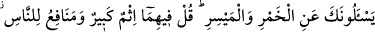
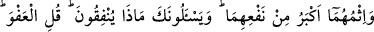
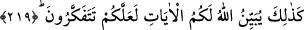

İÇKİ VE KUMAR
219. Sana, şarap ve kumar hakkında soru sorarlar. De ki: Her ikisinde de büyük
bir günah ve insanlar için birtakım faydalar vardır. Ancak her ikisinin de günahı
faydasından daha büyüktür. Yine sana iyilik yolunda ne harcayacaklarını sorarlar.
“İhtiyaç fazlasını” de. Allah size âyetleri böyle açıklar ki düşünesiniz.
İbn Abbâs (r.a.) demiştir ki: Rasûlullah (s.a.)’in ashâbından daha hayırlı bir topluluk
görmedim. Onlar Peygamber Efendimiz (s.a.)’e sadece on üç mesele sormuşlardır.
Bunların hepsi de Kur’ân’da zikredilmiştir. Onlar ancak kendilerine ve müslümanlara
fayda verecek şeylerden soruyorlardı.
Hamr, “örtmek” mânâsında olan “hamara” fiilinden masdardır. Üzüm suyunun
şiddetli bir şekilde kaynatılıp köpürmesinden elde edilir. İnsan aklını, iyiyi kötüden
ayırma gücünü örtüp çalışmaz hale getirmesi sebebiyle ona bu isim verilmiştir. Sanki o
örtünün tâ kendisidir. Nitekim şaraba “sekr” de denmiştir. Çünkü o aklı sarhoş ederek
işe yaramaz hale sokar.
“Sana şarabtan sorarlar”dan maksad, şarabın kullanımının hükmünü sorarlar,
demektir. Çünkü helâl ve haram, günah ve tâat “ef ’âl-i mükellefîn”in kısımlarındandır.
Eşyânın kendisinde günahlık yoktur. Şarabın kullanımına, onun alınıp satılması ve diğer
başka tasarruflar da girer.
Meysir (kumar), mev’id ve merci gibi “yesura” fiilinden masdar-ı mîmîdir. İştikakı
husûsunda iki görüş vardır: Birincisi, kolaylık mânâsında olan “yüsr” kelimesindendir.
Çünkü kumar, malı herhangi bir yorgunluk ve güçlük çekmeksizin kolaylıkla alma
yoludur. İkincisine göre ise o, “yesâr” kelimesindendir. Çünkü kumar, bir nevi
soygundur. Bütün kumar çeşitleri, satranç ve çocukların ceviz v.b. şeylerle yaptıkları
oyunlara varıncaya kadar her şey, “meysir” kelimesinin muhtevâsına dahildir.
İçki ve kumarın kullanımında büyük bir günah vardır. Çünkü her ikisi de malın yok
olmasına sebeb olduğu gibi ayrıca şarap, din ve dünyanın temeli olan aklın istenilen
şekilde çalışmasını engeller. İçki ve kumarda insanlar için bazı faydalar da vardır.
Meselâ içki satışı yapan kimse, yüksek düzeyde para kazandığında içinde bir ferah ve
sevinç bulur. Ayrıca şarap, zayıf yapılı olanları takviye eder. Yenen şeylerin
hazmedilmesini kolaylaştırır. Cimâda daha kuvvetli olmaya yardımcı olur. Mahzunu
teselli eder. Korkak olana güç verir. Cimrinin daha cömert davranmasına sebeb olur.
Rengi saflaştırır. Âciz ve yorgun gence güç verir ve himmeti cûşa getirir. Kumarın